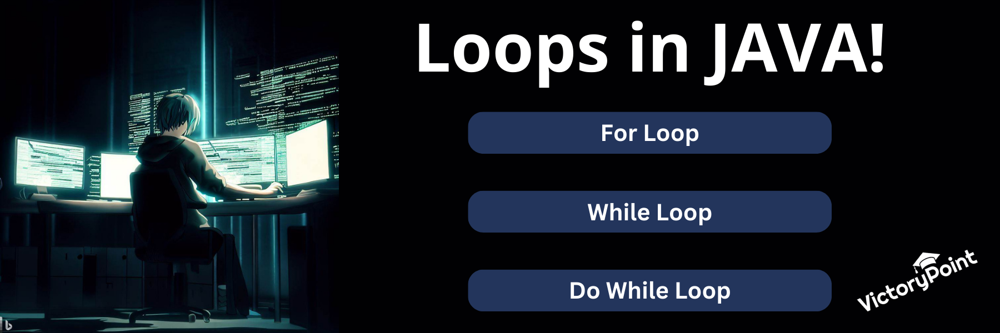
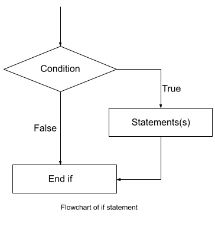
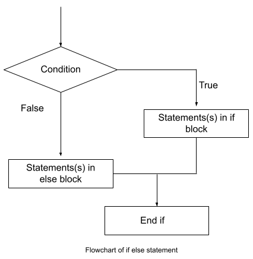
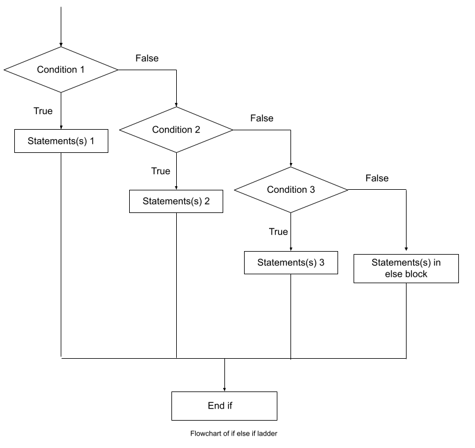

Mastering the Loops in Java: A Beginner’s Guide
Hello, dear coders! Buckle up for an exciting journey where we explore a critical aspect of coding - the loops. Loops are the heart of any programming language, and today, we're diving into the world of Java loops. Let's unravel the mystery of for, while, and do-while loops, and uncover their potential in writing efficient code. We promise you, by the end of this blog, loops will be your best coding companions.
For Loop
For loops are powerful tools in programming that allow us to iterate over collections or perform a specific task a defined number of times. They provide efficiency and flexibility, enabling us to process data, perform calculations, and control program flow. With an initialization step, termination condition, and increment or decrement step, for loops offer a concise and organized way to achieve repetitive tasks.
Syntax
for(Expression 1; Expression 2; Expression 3){
//code to be executed
}
Flowchart
A flowchart of a for loop visually represents the repetitive execution of a block of code for a specified number of iterations

Example
public class Example{
public static void main(String args[]){
int x = 5;
for(int i = 1; i <= 10; i++){
System.out.println(num + " * " + i + " = " +num*i);
}
}
}
Output:
5 * 1 = 5
5 * 2 = 10
5 * 3 = 15
5 * 4 = 20
5 * 5 = 25
5 * 6 = 30
5 * 7 = 35
5 * 8 = 40
5 * 9 = 45
5 * 10 = 50
While Loop
While loops are fundamental constructs in programming that allow us to repeatedly execute a block of code as long as a given condition remains true. The structure of a while loop consists of the condition itself, which is evaluated before each iteration, and the loop body that is executed as long as the condition holds true. This makes while loops particularly useful when the number of iterations is not known in advance or when we want to continuously perform a task until a certain condition is met. However, it is essential to ensure that the condition eventually becomes false to prevent infinite looping. While loops provide flexibility and versatility in designing algorithms and are valuable tools for creating interactive programs, handling input validation, and implementing complex logic.
Syntax
while (condition) {
// code block to be executed
}
Flowchart
Flowchart of a while loop visually represents the iterative execution of a block of code as long as a given condition remains true.

Example
The example demonstrates a while loop that prints the values of the variable 'i' from 0 to 4, incrementing it by 1 with each iteration
public class Example{
public static void main(String args[]){
int i = 0;
while(i < 5){
System.out.println(i);
i++;
}
}
}
Output:
0
1
2
3
4
Do-While Loop
The do-while loop executes a block of code at least once and then continues to repeat as long as a specified condition remains true, making it useful for scenarios where the action should be performed before checking the condition.
Syntax
do {
// code block to be executed
}
while (condition);
Flowchart

Example
The example demonstrates a do-while loop that prints the values of the variable 'j' from 0 to 2, incrementing it by 1 with each iteration.
public class Example{
public static void main(String args[]){
int j = 0;
do {
println(j);
j++;
} while (j < 3);
}
}
Output:
0
1
2
Difference between While and Do-While Loop
The main difference between the while loop and the do-while loop lies in the timing of the condition check.In a while loop, the condition is evaluated before the execution of the loop block. If the condition is false initially, the loop block is never executed. This is known as entry-controlled looping because the loop may not run at all if the condition is false from the start. On the other hand, the do-while loop performs the condition check after the execution of the loop block. This guarantees that the loop block is executed at least once, regardless of the condition's initial value. The condition is checked after each iteration, and if it evaluates to true, the loop continues. This is referred to as exit-controlled looping because the loop runs until the condition becomes false. The choice between a while loop and a do-while loop depends on the specific requirements of the program. If you want to execute the loop block only if the condition is initially true, you can use a while loop. However, if you need to ensure that the loop block executes at least once, regardless of the initial condition, a do-while loop is more appropriate.
Example
Here is an example that highlights the difference between a while loop and a do-while loop
public class Example {
public static void main(String[] args)
{
// While Loop
int x = 5;
while (x < 5) {
System.out.println("Inside the while loop");
x++;
}
System.out.println("Outside the while loop");
// Do-While Loop
int y = 5;
do {
System.out.println("Inside the do-while loop");
y++;
} while (y < 5);
System.out.println("Outside the do-while loop");
}
}
Output:
Outside the while loop
Inside the do-while loop
Outside the do-while loop
In this example, the while loop condition x < 5 is initially false, so the code block within the while loop is never executed. As a result, only the "Outside the while loop" statement is printed. On the other hand, the do-while loop executes the code block at least once, regardless of the initial condition. Even though the condition y < 5 is initially false, the code block within the do-while loop is executed once before checking the condition. As a result, "Inside the do-while loop" is printed once, followed by the "Outside the do-while loop" statement. This example effectively demonstrates that the while loop performs an entry-controlled check, while the do-while loop is an exit-controlled loop that ensures the code block executes at least once before evaluating the condition.
Nested Loops
Nested loops are a fascinating concept in programming that allows loops to be nested within each other. This opens up a world of possibilities as we can create intricate patterns, perform complex computations, and iterate over multiple dimensions. Each iteration of the outer loop triggers a complete set of iterations of the inner loop, resulting in a powerful repetition mechanism. Nested loops find applications in various domains, from processing multi-dimensional arrays to generating complex data structures. However, it is important to ensure efficiency and avoid excessive nesting to maintain optimal performance. Harnessing the potential of nested loops can unlock new levels of control and flexibility in your code.
public class Example {
public static void main(String[] args)
{
int rows = 2,col = 3;
for (int i = 0; i < rows; i++) {
for (int j = 0; j <= col; j++) {
System.out.print(j+" ");
}
System.out.println();
}
}
}
Output:
0 1 2
0 1 2
In this code, a nested loop is used to generate a rectangular pattern of numbers. The outer loop controls the number of rows, while the inner loop controls the number of columns. Inside the inner loop, the code prints the value of j followed by a space. This results in printing the numbers from 0 to the given number of columns for each row.
This code demonstrates how nested loops can be used to generate structured patterns and highlights the flexibility of controlling the iteration for rows and columns separately.